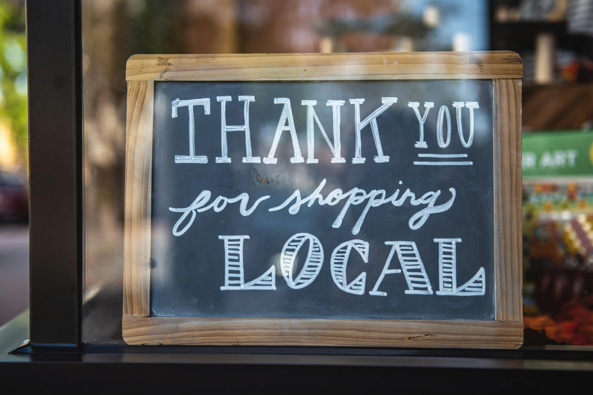

Ways of giving back to your community
Volunteering your time to support a cause you are passionate about is something you will never regret. It will enrich your life, familiarize you with your community, and connect you to people and ideas that will positively impact your perspective for the rest of your life. Helping your community is an opportunity for you to grow as a person, to better understand how you fit into the world around you.
Community Clean Up

- Pick up trash that you see on the side of the road
- Clean up the town commons and improve it to make it more attractive
- Offer to mow lawns to improve the looks on the main street
Help Vulnerable Neighbors

- Assist with lawn mowing, trash and snow removal and create a “shop squad” with neighbors to pick up groceries and medicine for homebound individuals
- Help your local food pantry
- Provide support to frontline health workers and first responders: Many health workers are not able to stay at home and are working around the clock, so take on tasks that they don’t have time to do as an expression of gratitude.
Support Local Business

- Shop at local stores and eat at local restaurants. This will help boost the local economy and make your community more vibrant.
- You can also volunteer or donate to local organizations.
- Use your social media platform to highlight and recommend local businesses.